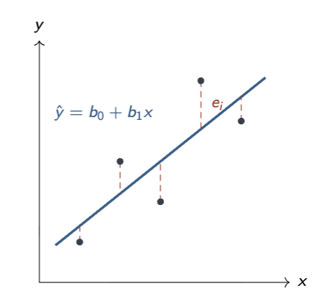
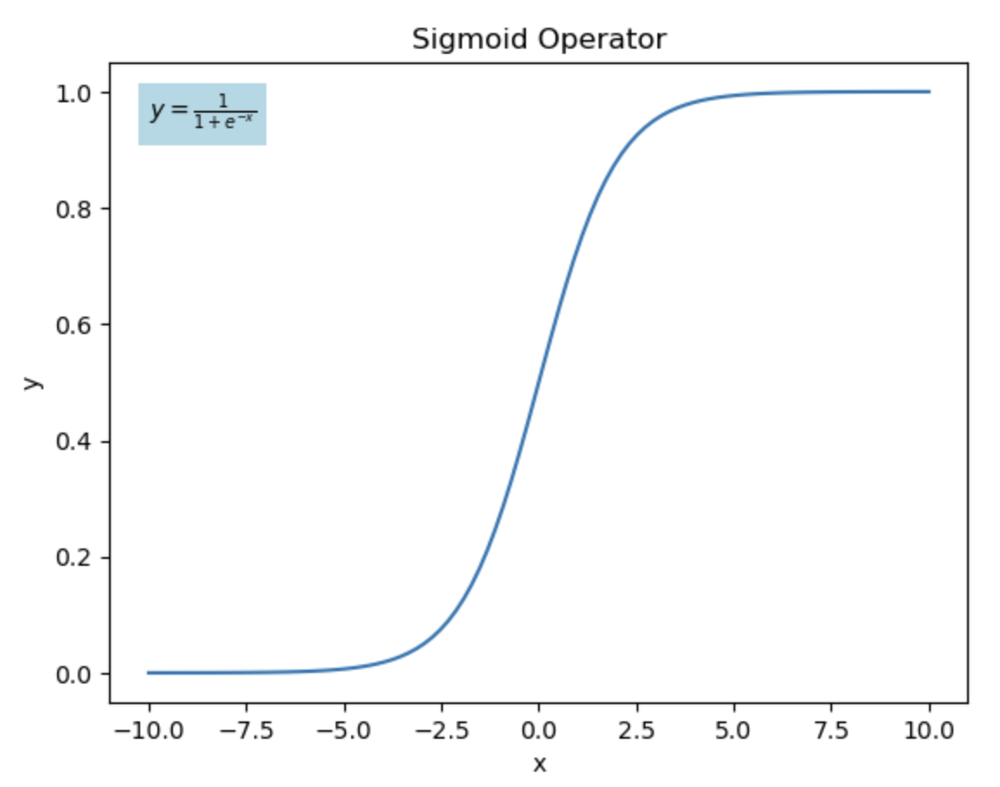
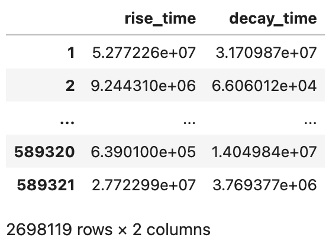
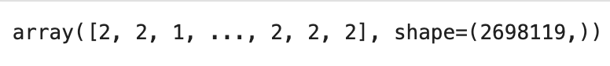
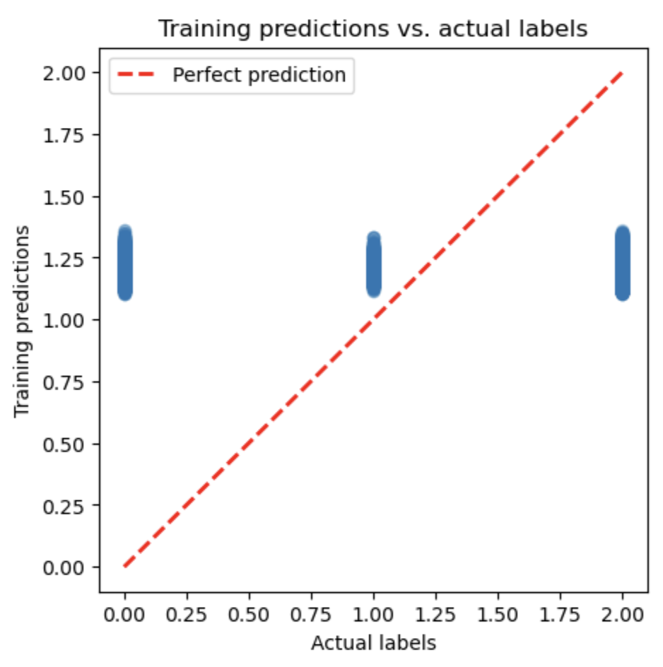
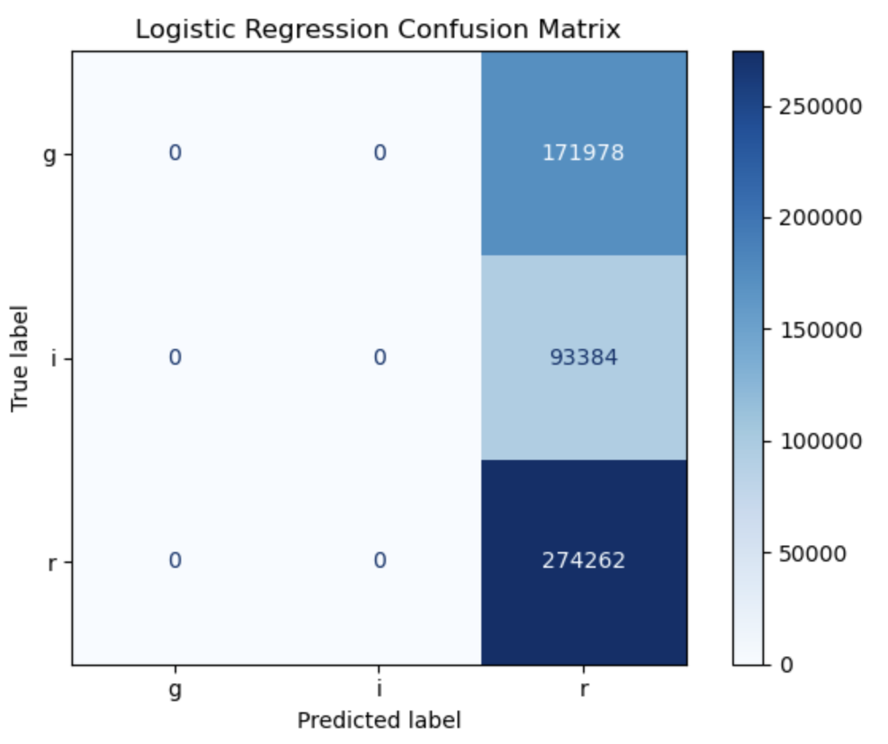

Overview
Regression predicts the labels for a set of data by fitting a function to the observations and returning the residuals, or the difference between the observations and predictions. The simplest form of regression is linear regression, where the data is fit with a straight line containing two parameters, the slope and y-intercept. One measurement that can be made from this supervised learning method is the sum of squared residuals, which is the goal of least-squares linear regression. Least squares attempts to minimize this measurement. A similar measurement can be made by finding the difference between the predictions and mean observation, which is the sum of squares total. Combining these two quantities gives the R^2 value, which compares the best-fit line's error to the error of guessing the mean for each prediction. In this case, R^2 = 1 is a perfect fit and R^2 = 0 is equivalent to choosing the mean for every prediction. Figure 1 below shows an example for how linear regression works. Logistic regression works the same way, but takes the linear score and applies the sigmoid operator to it. The sigmoid operator is a smooth function that guarantees that the values will fall between 0 and 1, which makes it convenient for interpreting them as probabilities. Inverting the sigmoid gives the linear piece back, so that logistic regression is linear in the log-odds. Figure 2 below shows an example of the sigmoid function from desmos graphing calculator.


Data Prep
Since regression will predict numeric labels of observations within the dataset, numeric data is required. In the context of astrophysical transient detections, one useful label that is presented in the data is the photometric band of each observation. These bands (g, r, i) describe the wavelength ranges that each transient detection was observed in. In particular, these correspond to 400-550nm, 550-700nm, and 700-850nm, respectively. These are measured using transmission curves, which ultimately come from optical inference filters built into the instrument. All of these wavelength ranges are found in the optical/visible range of the electromagnetic spectrum, with a small fraction occupying the near-infrared range. The goal of training a regression classifier here is to see whether or not the photometric bands of transient detections can be predicted based on transient rise/decay times. To obtain more sky coverage than before, 10 randomly-selected partitions will be used to train the NB classifier, rather than the first 10 partitions of data which occupy a narrow region on the sky. A snapshot of the data is shown below in Figure 3, which includes the transient rise/decay times and the photometric bands (used as labels). Figure 4 shows the labels associated with this dataset, and Figures 5 and 6 show the datasets split into tranining and testing data, respectively. This data is a result of the data cleaning that was described in the DataPrep_EDA tab. The full 10 partition dataset contains 2,698,119 rows. Finally, in order to construct a decision tree, the data need to be split into testing and training datasets. This was accomplished by allocating 20% of the dataset to testing data, and the other 80% to training data. The split was chosen randomly, but can be reproduced using a random_state identifier. Finally, the split attempts to keep roughly the same proportions of each label in both datasets.




- Lightcurves ("s3://ipac-irsa-ztf/ztf/enhanced/dr24/lc/hats")
Code
The code used for this project can be found under the "Regression" header in the following jupyter notebook, which has been pushed to this github repository.
View Jupyter NotebookResults


Figure 8 above shows a confusion matrix for the logistic regression model predictions. In this case, the logistic regression model only predicts the r-band, which has the largest number of observations in the original data. Therefore, this is also a weak model for predicting photometric bands from transient rise and decay times. The predicted coefficient in this case corresponds to the log-odds, meaning that taking the exponential of the odds will return the value to the linear score. Comparing this to the Naive Bayes classifier shows that the Naive Bayes classifier did a significantly better job, which is due to the fact that logistic regression assumes a continuous fit to the discrete data at hand.
Conclusions
Using the figures above, it is clear that both linear and logistic regression cannot accurately predict photometric band from transient rise and decay times. This is most likely due to the fact these models fit a continuous function to discrete data that has only three possible labels. These models would perform better for data that has a wider variety of possible labels to choose from.